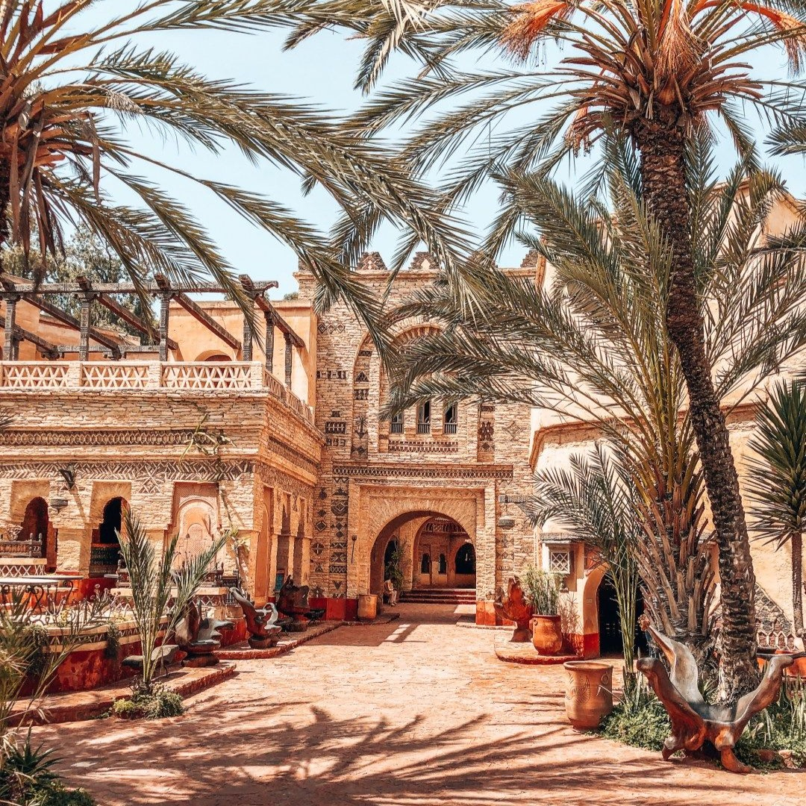
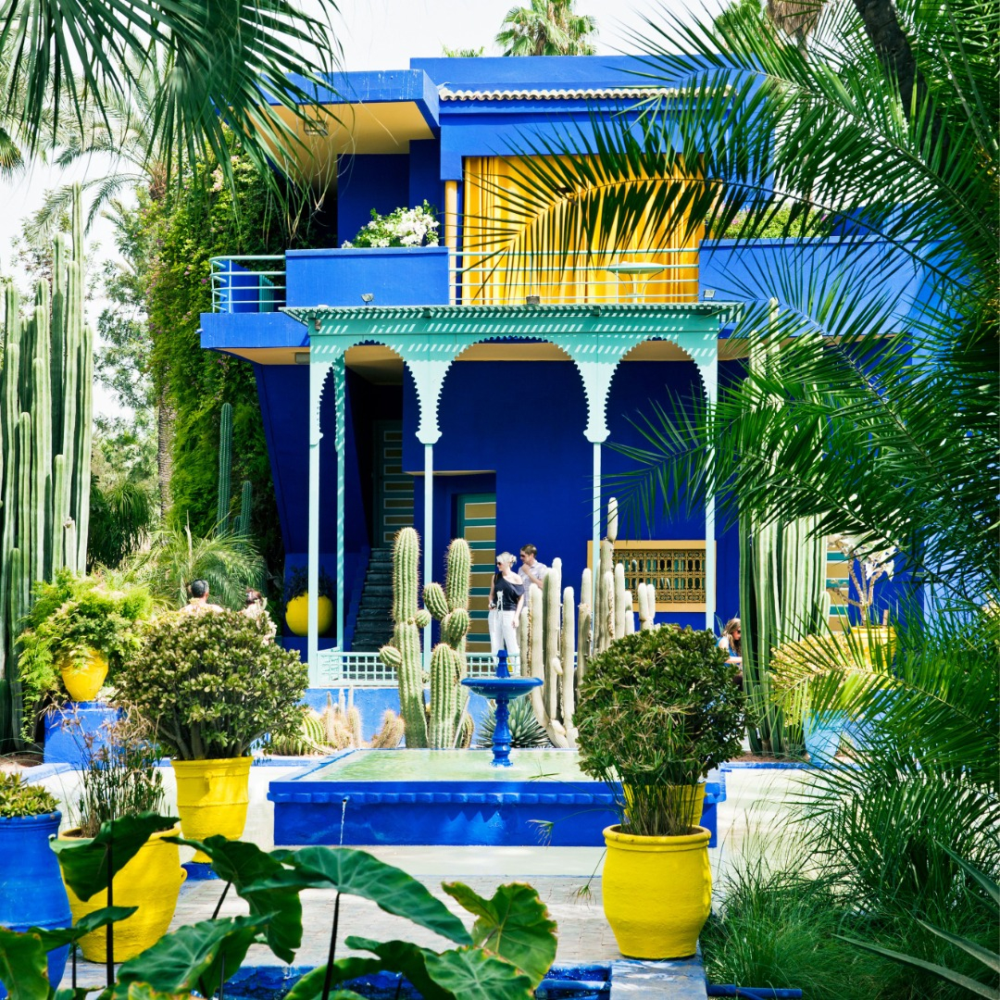
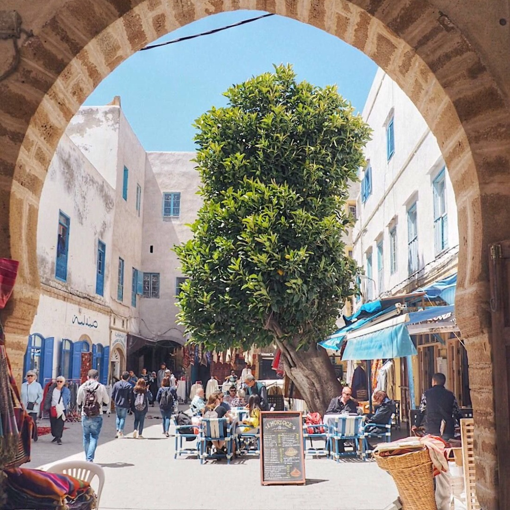
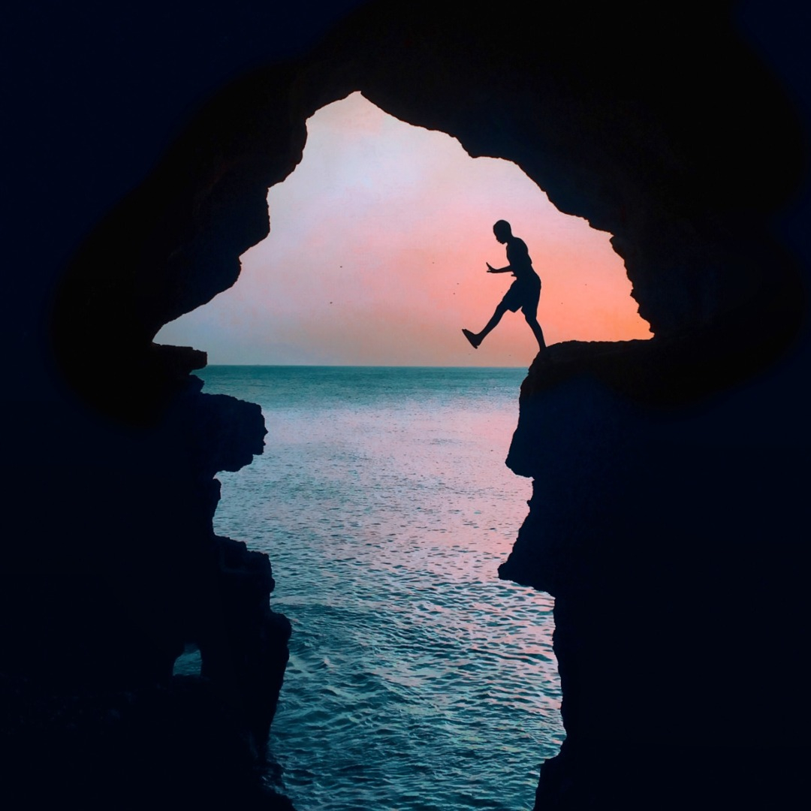

Places to Visit in Morocco
Agadir
Agadir, a city along Morocco’s southern Atlantic coast, in the foothills of the Anti-Atlas Mountains, is the capital of Agadir-Ida Ou Tanane province. A resort destination, it's known for its golf courses, wide crescent beach and seaside promenade lined with cafes, restaurants and bars. Agadir's hilltop kasbah was destroyed in a 1960 earthquake, but its original old wall remains standing.
Visit meMarrakech
Marrakesh, a former imperial city in western Morocco, is a major economic center and home to mosques, palaces and gardens. The medina is a densely packed, walled medieval city dating to the Berber Empire, with mazelike alleys where thriving souks (marketplaces) sell traditional textiles, pottery and jewelry. A symbol of the city, and visible for miles, is the Moorish minaret of 12th-century Koutoubia Mosque.
Visit meEssaouira
Essaouira is a port city and resort on Morocco’s Atlantic coast. Its medina (old town) is protected by 18th-century seafront ramparts called the Skala de la Kasbah, which were designed by European engineers. Old brass cannons line the walls, and there are ocean views. Strong "Alizée" trade winds make the city’s crescent beach popular for surfing, windsurfing and kitesurfing.
Visit meTangier
Tangier, a Moroccan port on the Strait of Gibraltar, has been a strategic gateway between Africa and Europe since Phoenician times. Its whitewashed hillside medina is home to the Dar el Makhzen, a palace of the sultans that's now a museum of Moroccan artifacts. The American Legation Museum, also in the medina, documents early diplomatic relations between the U.S. and Morocco in an 1821 Moorish-style former consulate.
Visit me